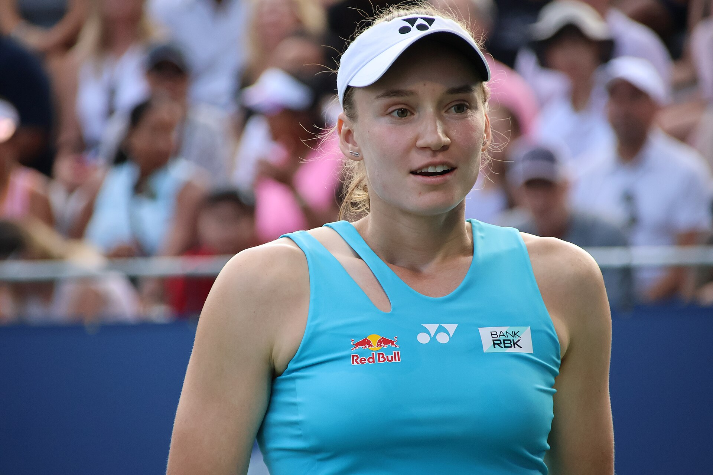

Neste domingo, 25 de outubro, terminou com dois grandes nomes do tênis mundial levantando troféus na reta final da temporada. Elena Rybakina confirmou seu favoritismo no WTA 500 de Ningbo, na China, enquanto Daniil Medvedev precisou reagir após perder o primeiro set para conquistar o ATP 250 de Almaty, no Cazaquistão.
As conquistas tiveram algo importante em comum: os dois defenderam os títulos obtidos em 2025, alcançaram a quarta taça da temporada e conseguiram manter a sequência de vitórias em competições nas quais já haviam sido campeões.
Para Rybakina, o troféu confirmou a excelente fase como número 1 do mundo. Para Medvedev, representou uma marca inédita na carreira e um resultado importante na corrida por uma vaga no ATP Finals de Turim.
O bicampeonato em Ningbo
Elena Rybakina não deixou espaço para surpresas na final. A tenista do Cazaquistão derrotou a canadense Leylah Fernandez por 6/2 e 6/2, em apenas 1h16, conquistando seu segundo título consecutivo no torneio chinês.
A decisão foi marcada pela superioridade de Rybakina nos momentos importantes. A número 1 do mundo conseguiu quatro quebras de saque, duas em cada set, e não perdeu nenhum de seus games de serviço durante a partida.
Fernandez, que chegou à final depois de superar Marie Bouzkova na semifinal, encontrou dificuldades para neutralizar a potência dos golpes da adversária. Rybakina soube explorar a profundidade das devoluções e manteve a pressão nos games de recepção.
No primeiro set, a cazaque conseguiu abrir vantagem depois de conquistar uma quebra no quinto game. A partir daquele momento, encontrou maior liberdade para atacar e fechou a parcial por 6/2.
A canadense tentou equilibrar o confronto no início do segundo set, mas Rybakina voltou a conseguir uma quebra para abrir 2 a 1. A vantagem permitiu que a líder do ranking controlasse a sequência da partida, confirmando o título com outro 6/2.
O resultado também ampliou a vantagem de Rybakina no confronto direto contra Fernandez. Agora, a cazaque soma quatro vitórias em seis partidas disputadas entre as duas no circuito principal da WTA.
Veja os melhores momentos da partida abaixo:
Marcas expressivas no circuito
A conquista de Ningbo foi a quarta de Elena Rybakina em 2026, depois dos títulos do Australian Open, Stuttgart e US Open.
O resultado elevou para 15 o número de títulos de simples da tenista no circuito WTA. Desse total, sete foram conquistados em torneios da categoria WTA 500.
Outro dado importante foi a sequência perfeita de Rybakina em Ningbo. Com o bicampeonato, a cazaque alcançou oito vitórias em oito partidas disputadas no torneio, considerando suas participações de 2025 e 2026.
O título também foi o primeiro conquistado desde que assumiu a liderança do ranking mundial. A posição foi alcançada depois de uma temporada marcada por grandes resultados, incluindo as conquistas de dois dos quatro torneios de Grand Slam.
A campanha chinesa não foi inteiramente tranquila. Nas quartas de final, Rybakina precisou de três sets para superar Katarzyna Kawa. Na semifinal, enfrentou Diana Shnaider e venceu por 6/3 e 7/5.
Na decisão, entretanto, encontrou seu melhor rendimento da semana. A vitória sobre Fernandez foi também a 53ª de Rybakina na temporada, maior número registrado no circuito feminino até aquele momento.
Medvedev conquista o ATP 250 de Almaty
Enquanto Rybakina controlou sua final desde o início, Daniil Medvedev precisou construir uma recuperação para conquistar o ATP 250 de Almaty.
O russo derrotou o georgiano Nikoloz Basilashvili por 6/7 (6-8), 6/1 e 6/3, em uma decisão que começou equilibrada e terminou com o domínio do ex-número 1 do mundo.
Basilashvili chegou à final depois de uma campanha surpreendente. O georgiano iniciou o torneio no qualifying, ocupando a 128ª posição do ranking mundial, e eliminou adversários importantes durante sua trajetória, incluindo Stefanos Tsitsipas na semifinal.
Na decisão, mostrou agressividade desde os primeiros games. O equilíbrio levou o primeiro set ao tie-break, no qual Basilashvili conseguiu aproveitar melhor os pontos decisivos e venceu por 8 a 6.
A resposta de Medvedev veio imediatamente. No segundo set, o russo aumentou a pressão nas trocas de bola, explorou os erros do adversário e dominou a parcial por 6/1.
No terceiro set, a experiência e a consistência de Medvedev fizeram a diferença. Basilashvili não conseguiu recuperar o rendimento apresentado no início, e o russo administrou a vantagem até fechar o confronto por 6/3.
Um dos números mais expressivos da decisão foi o desempenho de Medvedev no saque. O campeão terminou a partida com 22 aces e não perdeu nenhum game de serviço.
Foi uma atuação que combinou paciência, regularidade e eficiência ofensiva, características importantes na trajetória de um jogador que construiu grande parte de seu sucesso em quadras duras.
Veja os melhores momentos da partida abaixo:
O 25º título e quebra marca inédita na carreira
O bicampeonato de Almaty teve um significado especial para Daniil Medvedev.
Apesar de já possuir uma carreira com conquistas importantes, incluindo o US Open de 2021 e o ATP Finals de 2020, o russo ainda não havia conseguido defender com sucesso um título do circuito ATP.
Essa marca foi alcançada em Almaty, justamente no torneio que havia vencido em 2025, quando superou o francês Corentin Moutet na decisão.
A conquista de 2026 representou o 25º título da carreira do tesnista e o quarto da temporada.
O desempenho no Cazaquistão também reforçou a boa fase do jogador em quadras duras cobertas. Antes da final, Medvedev havia superado Sho Shimabukuro, por 6/2 e 6/1, e Terence Atmane, por 6/4 e 6/4.
Na semifinal, enfrentou Alexander Bublik, representante do país-sede. Medvedev venceu o primeiro set por 6/3, mas o adversário precisou abandonar o confronto devido a um problema no joelho.
Assim, o russo chegou à final em boas condições físicas e conseguiu superar uma das partidas mais exigentes de sua campanha.
O título também teve impacto na corrida para o ATP Finals. Medvedev alcançou a quinta colocação na classificação da temporada que determina os participantes do torneio de encerramento do circuito masculino, fortalecendo sua posição na disputa por uma das oito vagas.
A reta final de 2026
As conquistas de Rybakina e Medvedev chegaram em momentos diferentes de suas temporadas, mas reforçaram a importância da regularidade no tênis profissional.
Rybakina encerrou Ningbo com quatro títulos no ano e na liderança do ranking feminino. Depois de conquistar o Australian Open e o US Open, mostrou que também consegue manter alto rendimento em competições menores, nas quais precisa lidar com adversárias de diferentes estilos em uma sequência curta de partidas.
Medvedev, por sua vez, encontrou em Almaty mais uma demonstração de sua capacidade de reação. Depois de perder o primeiro set para um adversário que havia começado o torneio no qualifying, conseguiu adaptar seu jogo e transformar uma final equilibrada em uma vitória convincente.
As conquistas também mostram como os torneios de diferentes categorias ganham importância ao longo da temporada. Entre os Grand Slams, os eventos ATP e WTA e as competições de encerramento do ano, cada resultado pode influenciar a trajetória dos principais jogadores. Essa estrutura fica mais clara no calendário do tênis ATP e WTA, que ajuda a compreender o peso de cada competição no circuito profissional.
Existe ainda uma diferença importante entre os objetivos dos dois campeões.
Rybakina já tinha presença garantida no WTA Finals e direciona sua preparação para defender o título da competição, com início previsto para 8 de novembro, em Indian Wells, nos Estados Unidos.
Medvedev ainda precisa assegurar matematicamente sua classificação ao ATP Finals, programado para 15 a 22 de novembro, em Turim, na Itália.
Antes disso, o russo tem compromissos previstos nos torneios de Viena e Paris, que oferecem novas oportunidades para somar pontos na corrida pela competição de encerramento da temporada.
Dois bicampeonatos e a força da experiência
A coincidência entre os títulos de Ningbo e Almaty vai além da data. Rybakina e Medvedev conquistaram o quarto troféu de suas temporadas, defenderam suas conquistas do ano anterior e alcançaram marcas inéditas em suas trajetórias.
A cazaque confirmou sua condição de protagonista do circuito feminino, acrescentando mais uma conquista a um ano marcado por títulos de Grand Slam e pela liderança mundial.
O russo, por outro lado, alcançou uma marca que ainda faltava em seu currículo, ao conseguir defender pela primeira vez um troféu ATP, além de fortalecer suas possibilidades de disputar novamente o Finals.
Em um circuito marcado pela intensidade física, pelas mudanças constantes no ranking e pela chegada de novos talentos, os dois mostraram a importância de combinar experiência com capacidade de adaptação.
Ningbo e Almaty não possuem o prestígio dos grandes torneios do calendário, mas entraram para a trajetória de dois campeões que encontraram maneiras diferentes de vencer.
Para Rybakina, o domingo foi uma demonstração de autoridade. Para Medvedev, uma prova de recuperação e resistência. Em ambos os casos, os títulos acrescentaram capítulos importantes a carreiras já consolidadas e deram ainda mais significado à reta final da temporada de tênis de 2026.